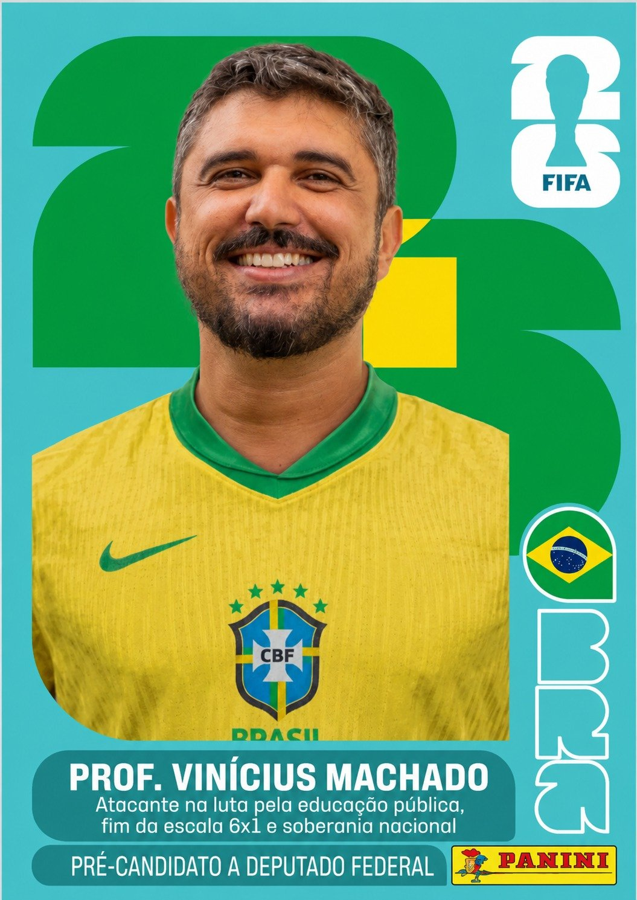

Prof. Vinícius Machado
Professor de História · Vila Velha (ES) · Pré-candidato a Deputado Federal 2026 · PSOL
"Minha mãe não tinha muito, mas me ensinou que pra quem vem do povo só tem uma saída: lutar."
Origem e trajetória
Vinícius Oliveira Machado é um legítimo filho da classe trabalhadora. Nascido em Cachoeiro de Itapemirim, percorreu diferentes caminhos ainda na infância, enfrentando as durezas da vida ao lado de sua mãe — uma mulher guerreira que transformou as dificuldades em luta por dignidade e ensinou, na prática, que lutar é a única saída para quem vem do povo.
Foi o primeiro da família, por parte de mãe, a entrar numa universidade pública. Tornou-se historiador, professor em Vila Velha, e mestre em Educação pela UFES. Mas sua história não cabe em títulos: são mais de 25 anos de militância política, iniciados nas escolas de São Paulo, entre o grêmio estudantil e as ruas, na defesa da educação pública, da tarifa zero e contra o aumento das passagens.
Antes de ser professor, trabalhou na escala 6x1 — farmácia, pet shop, o que aparecia. Sabe o que é acordar cedo, chegar tarde em casa e ainda assim não ter nada sobrando no final do mês. Essa experiência não é só história de vida: é a razão pela qual ele defende o fim da escala 6x1 com tanta convicção.
"Antes de sonhar, eu precisava sobreviver. Eu sei o que é não ter perspectiva de entrar numa universidade porque primeiro você precisa trabalhar."
No Espírito Santo, construiu sua militância na UFES, no Centro Acadêmico Livre de História e no DCE, protagonizando lutas por permanência estudantil e contra a mercantilização do ensino. Esteve na linha de frente da greve das federais de 2012. Participou também da construção de cursinhos populares nos territórios — com carinho especial pelo Cursinho Periferia Resiste, no Jardim Carapina, Serra.
Esteve presente nos momentos decisivos da história recente: nas Jornadas de Junho de 2013, na resistência ao golpe de 2016, na greve geral de 2017 e na linha de combate contra a extrema direita — sempre na defesa das liberdades democráticas e dos direitos do povo.
Perspectiva — de onde ele fala
Vinícius fala de um lugar muito específico: o de quem viveu na pele as contradições do Brasil. Filho do interior do Espírito Santo, passou pela periferia de São Paulo, trabalhou em empregos precários, estudou na universidade pública e hoje está todo dia na escola municipal, na sala de aula, ao lado de jovens da classe trabalhadora.
Essa trajetória não é decoração. Ela define como ele enxerga os problemas do país — e que soluções ele considera urgentes. Não é um político de gabinete. É alguém que conhece o peso da escala exaustiva, a pressão dentro da escola pública, a falta de perspectiva da juventude periférica.
Sua candidatura nasce das ruas, das escolas e da coletividade — não de acordos de bastidores nem de financiamento do grande capital.
Agendas que ele defende
Vinícius não defende temas genéricos. Ele defende pautas concretas, que afetam a vida de quem trabalha:
Fim da escala 6x1
Educação pública emancipadora
Valorização do magistério
Direitos trabalhistas
Fim da precarização do trabalho
Regulação do trabalho por aplicativos
Democracia e liberdades
Soberania nacional
Juventude com perspectiva de futuro
Por que o fim da escala 6x1 é uma prioridade?
Trabalhar seis dias e folgar apenas um não é uma necessidade econômica — é uma escolha política que favorece quem lucra com o trabalho alheio. O Brasil é um dos países com jornadas de trabalho mais longas do mundo. Enquanto isso, a saúde mental dos trabalhadores se deteriora, o tempo com a família encolhe e o horizonte de futuro desaparece.
A aprovação do projeto na CCJ da Câmara foi uma vitória da classe trabalhadora — mas a batalha ainda não acabou. É no Senado e no plenário da Câmara que vai se decidir. Por isso ter um deputado comprometido com essa pauta importa tanto.
Valores que orientam sua caminhada
✊
Organização popular
Acredita que a transformação social vem da organização coletiva, não de líderes salvadores. A pré-candidatura é construída com pessoas, não para elas.
📖
Educação como direito
Educação não é mercadoria nem vitrine de governo. É um direito que deve abrir horizontes — especialmente para quem mais precisou lutar para chegar até ela.
⚖️
Dignidade no trabalho
Trabalho digno não é favor — é direito. Quem sustenta o país com o suor do trabalho merece tempo para viver, descansar e sonhar.
🏛️
Democracia e liberdade
Defensor das liberdades democráticas e das instituições. Esteve na linha de frente contra a extrema direita e o autoritarismo, sem abrir mão de suas convicções.
Opiniões e posicionamentos
Educação no Espírito Santo
Vinícius critica duramente a política educacional do governo estadual, que apresenta o ES como "a melhor educação do Brasil" enquanto, na prática, há pressão institucional sobre professores para aprovarem alunos sem rendimento mínimo. Para ele, isso é maquiagem de dados para manter um projeto de poder — não comprometimento real com a aprendizagem.
Repressão a trabalhadores em Vila Velha
Posicionou-se publicamente contra o uso da guarda municipal pelo prefeito Arnaldinho Borgo para reprimir trabalhadores terceirizados em greve. Para Vinícius, o governo de Vila Velha tem sido marcado por autoritarismo, ausência de diálogo com servidores e servidoras e uma agenda de privatizações e precarização.
Trabalho por aplicativos
Crítico do PLP que tramita no Congresso e que, segundo ele, na prática legaliza a exploração dos trabalhadores de plataformas digitais — favorecendo os grandes empresários em vez de garantir direitos básicos a entregadores e motoristas. Defende regulação com remuneração justa, descanso e direitos.
O papel do Congresso
Avalia que o Congresso Nacional, como está hoje, tende a atuar contra os interesses da população trabalhadora. A estratégia para mudar esse quadro é dupla: pressão popular nas ruas e eleição de representantes comprometidos com a classe trabalhadora.
Verbas públicas sem transparência
Posicionou-se contra a aprovação de empréstimo de R$ 250 milhões pela Câmara de Vereadores de Vila Velha sem transparência nem diálogo com a população. Para ele, o dinheiro público não é do prefeito — é de quem acorda cedo e faz a cidade funcionar.
Essa história continua com você
A pré-candidatura do Prof. Vinícius Machado nasce das ruas, das escolas e das pessoas. Se você se identificou com o que leu aqui, o próximo passo é simples.
Quero apoiar o Prof. Vinícius Machado →